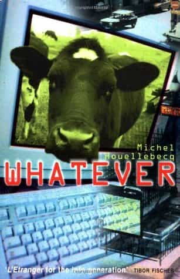

< < < Back
The Important Works Of French Author Michel Houellebecq – Return Of Kings
Few authors who write good fiction say something real, substantial and relevant about Western society and culture. However, the Frenchman Michel Houellebecq (1958-) is an exception. Ever since his first novel, translated into English as Whatever (published 1998, 1994 in French), he has generated, although somewhat repetitive in terms of style and main characters, splendid, multilayered novels.
Even when he sometimes touches upon subjects that are even “controversial” (i.e. do not conform to general ideas) for people within the manosphere, he often makes good points and either creates laughter or encourages reflection. While his novels mainly take place in France, many of the discourses can be contextualized so that an American can draw the same conclusions with regard to his native country.
In this article I will describe and explain some of the core ideas that Houellebecq has written about in Whatever, The Elementary Particles (2000), Platform (2002), The Possibility of an Island (2005), The Map and the Territory (2012), and Submission (2015). I have also read some of his material in French, such as Lanzarote (2000), but focus solely on the English translations of the novels. Secondarily I will also make value judgments about the overall quality of each novel.
The sexual marketplace
As ROK writer Troy Francis emphasizes in his terrific article, Houellebecq was one of the first thinkers to analyze the sexual marketplace. This angle was mainly used in Whatever, in which the unnamed protagonist and his ugly virgin co-worker Raphael face the reality of contemporary Western social-liberal culture.
The semi-depressed and cynical protagonist has had sex, although it was about two years ago since the last time, and is thus not a total lost case, but prefers to jerk off rather than to compete for the meat while in a nightclub. His friend, on the other hand, is simply too ugly to bang and even considers to kill a more sexually successful black guy in resentment. It is misanthropic and not very uplifting, although the reality for some people.
“Economic liberalism is an extension of the domain of the struggle, its extension to all ages and all classes of society. Sexual liberalism is likewise an extension of the domain of the struggle, its extension to all ages and all classes of society.”
Whatever is not as well-written and multi-faceted as Houellebecq’s later works, but quite entertaining and makes good points about for instance the significance of material wealth vis-a-vis emotional well-being.

Cloning and aging
The Elementary Particles and The Possibility of an Island focus on futuristic scenarios, cloning in particular. But whereas the former only has genetic programming as a frame, the plot in The Possibility of an Island alternately is about Daniel and his two clones, living as hermits in post-apocalyptic environments.
The real Daniel is an aging yet still successful comedian who manages to bang young hotties up to a point where even he becomes too old for his girlfriend. His hedonistic lifestyle can be looked upon as empty, but at least he is not miserable until he gets cuckolded. It is quite depressing to read about this process but also very realistic.
The controversy, especially spelled out at the end of The Elementary Particles, is that Houellebecq suggests that a world without men would be better and safer. I would leave it up to the readers to reflect on that.
Apart from this dimension, though, it is brimming with real-talk and sharp observations:
“The terrible predicament of a beautiful girl is that only an experienced womanizer, someone cynical and without scruple, feels up to the challenge. More often than not, she will lose her virginity to some filthy lowlife in what proves to be the first step in an irrevocable decline.”
Overall The Elementary Particles is better and perhaps his strongest novel up to this date. It features all of the main strengths of Houllebecq’s particular writing formula, such as dark humour, sharp political and philosophical commentary, social analysis and human relationships (both regarding love and lust).
Sex tourism and hedonism
In Platform, Houellebecq deals with hedonism in parallel with sex tourism in more depth. The protagonist is a 40-year old sex tourist, who, together with his much younger and hotter French girlfriend Valérie, starts to reflect upon the ideal modern world: a place in which less prosperous people, not only Thai (although a large share of the plot occurs in Thailand), can serve the needs of the global middle and upper classes. Only aggressive traditional religions/ideologies like Islam can stand in its way.
About 17 years later we know that this type of world has not been realized, although in part it is still the case that men go to places like Pattaya to have sex with prostitutes. In fact, Matrix-like phenomena such as virtual reality and human-like sex dolls and robots appear to be where things are heading.
Platform is still an entertaining and engaging novel. Some of the characters, Robert in particular, remind one about ROK contributors and commentators.
Islamization and traditional resurgence
The conservative and traditional angle can fragmentarily be found within Houellebecq’s earliest works, but in The Map and the Territory one finds a more distinctive penchant for pre-modern ideas such as Ferdinand Tönnies’ Gemeinschaft (community preferred over society). For French people, a quiet life on the countryside might be preferable to the urban landscape.
There is also a connection between this and his succeeding book Submission, since the French traditionalist philosopher René Guénon is briefly mentioned in The Map and the Territory. In Submission his writings play a more explicit role in the realm of ideas.
Overall, though, the Islamization of France, is the core idea that Submission hinges upon. It is full of interesting observations:
Hidden all day in impenetrable black burkas, rich Saudi women transformed themselves by night into birds of paradise with their corsets, their see-through bras, their G-strings with multicolored lace and rhinestones. They were exactly the opposite of Western women, who spent their days dressed up and looking sexy to maintain their social status, then collapsed in exhaustion once they got home, abandoning all hope of seduction in favor of clothes that were loose and shapeless.
Style-wise The Map and the Territory might be Houellebecq’s strongest novel, which granted him the Goncourt prize, but idea-wise Submission is more worthwhile.
In summary
Even if many of these ideas have been covered by ROK over the years, and sometimes in more depth, Houellebecq is a great novelist and his books are worth reading only for the sake of pleasure (or for the sake of ideas). It can also be a way to red pill blue pill readers since he, despite the controversy that his books has led to, is a well regarded and award winning author. Strongly recommended.
Read More: Why Michel Houellebecq’s “Submission” Is The Most Important Novel Of 2015